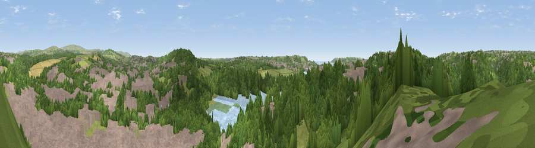

Viewpoint near Plympton
#21841 in England · top 41% of its area beats it · near PlymptonWhere it is
The exact computed spot (SX 51425 56575). Click the marker for map links.
The view, rendered

A 360° render of this exact spot computed from the terrain model, tree cover and land cover — summer colours, afternoon light, calibrated against photographs of famous viewpoints. Real trees, hedges and buildings will differ in detail.
The panorama
Grey silhouette: terrain skyline in each direction (720 bearings, Earth curvature and refraction included). Dashed green: skyline with trees (+15 m) and buildings (+8 m) as obstacles. Blue strip: how far the ground is visible on each bearing.
Where the view opens
Wedge length = distance to the farthest visible ground on that bearing (vegetation-aware). Rings at 10, 25 and 50 km.
What fills the view
47% woodland · 36% built-up · 12% grassland · 4% water ·
Angular shares of the visible panorama (visual magnitude), not map area. Landscape diversity 0.50 (0–1 Shannon).
Key numbers
More beautiful places nearby
The staircase of upgrades: each row has a higher view potential than everything closer. Driving times are estimates from straight-line distance, calibrated against real road routing — check an actual route before setting out.
| Place | Direction | Drive | Score |
|---|---|---|---|
| Viewpoint near Plympton | ESE · 2 km | ~5 min | 53.3 |
| Boringdon Park | ENE · 2 km | ~6 min | 56.4 |
| Hartley | W · 3 km | ~7 min | 56.8 |
| Viewpoint near Crownhill | NW · 4 km | ~9 min | 59.4 |
| Viewpoint near Down Thomas | S · 5 km | ~11 min | 59.9 |
| Viewpoint near Down Thomas | SSW · 5 km | ~11 min | 70.8 |
| Viewpoint near Sparkwell | ENE · 6 km | ~13 min | 77.6 |
| Viewpoint near Lee Moor | NE · 7 km | ~15 min | 82.7 |
50.39024, -4.09147 · source: screening · position refined by local search. Computed location — check access rights before visiting.